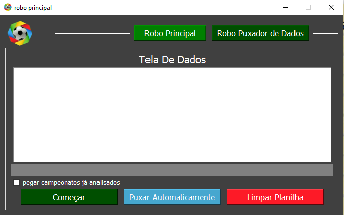
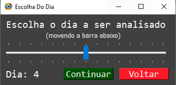
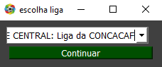
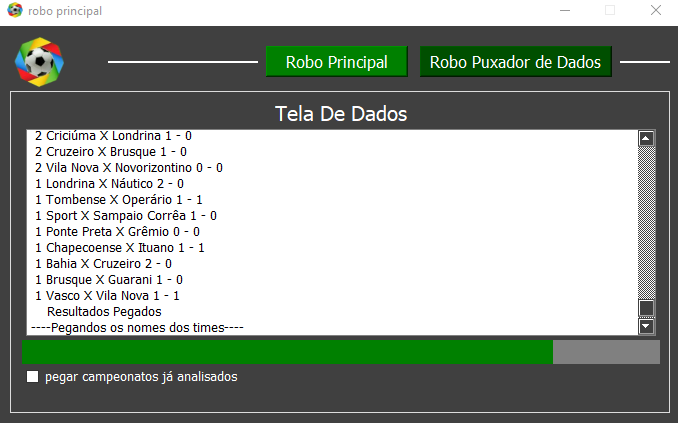
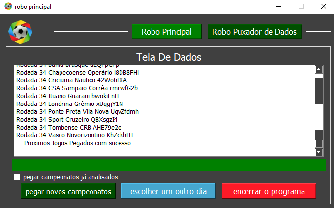
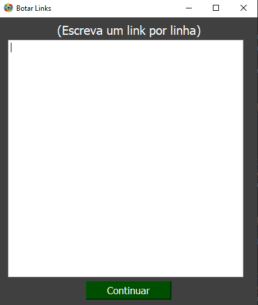
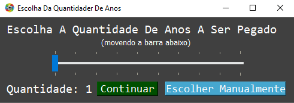
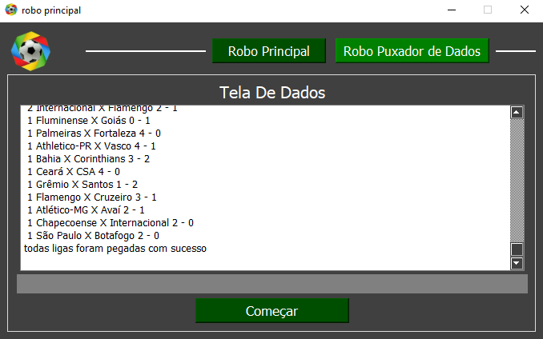

A Derby investimento é uma empresa que analisa jogos de futebol com uma
inteligencia artificial, da (palpites) de apostas e investe o dinheiro dos acionistas de forma
automática.
a Derby investimento foi uma empresa criada por min e um dos meus irmões, por volta de 2014 meu
irmão
teve a ideia de analisar jogos de futebol e apostar levando em consideração as estatisticas dos
times, e
a partir dai a gente começamos a desenvolver um sistema de análise a inicialmente nós fazíamos as
análises
calculando na mão, daí começamos a desenvolver uma inteligência artificial que fizesse todos os
cálculos
automaticamente.
Sobre o Robô
O robô foi criado com o intuito de automatiza o processo de atualização das planilhas,
esse serviços era um serviço que requeria no mínimo 2 a 3 pessoa dependendo das quantidades de ligas
a
serem analisadas, e com a automação do robô baixo o tempo de serviço dos funcionários e a quantidade
de
funcionários.
Versões
Selenium: A
primeira
versão do robô foi construindo com a biblioteca do selenium, foi um robô bastante inovador e
útil na
época, porém, foi surgindo maiores necessidades de dados, e o robô não tava tendo velocidade
suficiente para puxar todos os dados necessários, e sem falar que ele demandava uma boa
quantidade
de potência do hardware, e dai eu iniciei o projeto de aprender mais sobre requisições e
APis
APIs: O robô criado com APIs teve uma taxa
de
sucesso enorme, não poderia ter dado mais certo. O robô ficou extremamente mais rápido,
leve e
demandando menos processamento da CPU.
Funções / Tela do Robô
Parte 1
Tela Principal

essa é a tela principal do robô, nela temos dois botões superiores para trocar de
serviços
e três inferiores para realizar as ações
Funções / Tela do Robô
Parte 2
inicialização


ao inicializar o robô temos uma janela para escolher o dia dos dados a ser puxados e
em
seguida outra para escolher a liga a ser analisada
Funções / Tela do Robô
Parte 3
Tela status / tela final


por fim temos a tela de status que mostra os dados sendo puxados e o progresso do
robô, e
depois a tela final que vem acompanhada de 3 novos botoes 1 para puxar dados de outra liga outro
para
puxar dados de outro dia, e outro para finalizar o robô.
Funções / Tela do Robô
Segunda Aba do Robô
Tela status / tela final
na segunda aba temos apenas um botão, para iniciar.
Funções / Tela do Robô
Segunda Aba Inicialização
Tela status / tela final

ao iniciar nos é apresentado a tela de link onde o usuário tem que adicionar o link da
liga que ele deseja puxar os dados.
Funções / Tela do Robô
Segunda Aba Finalização
Tela status / tela final

ao adicionar o link e você é direcionado para uma tela aonde você tem duas escolhas
pegar
os ultimos ano em ordem cronológica, a quantidade que você escolher ou pegar os anos de
forma
manual escolhendo com apresentado na imagem a baixo
Funções / Tela do Robô
Segunda Aba inicialização
Tela status / tela final

por fim temos a tela final com um visor que nos apresentar os dados que foram
salvos,
e o botão começar para poder recomeçar o processo.